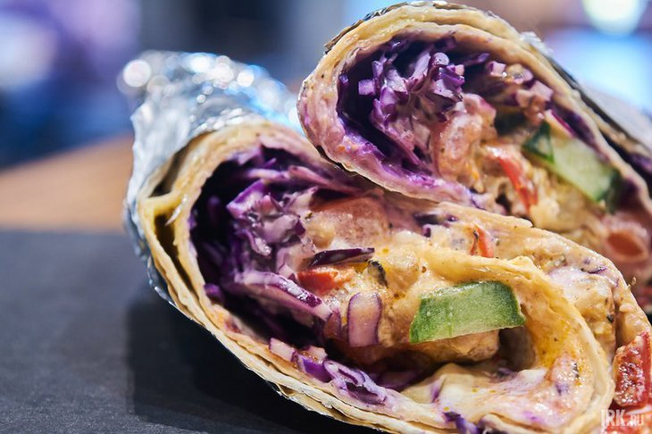

Люди отравились шаурмой
В Ленинском округе Иркутска Роспотребнадзор приостановил работу кафе, 11 посетителей которого отравились шаурмой. Сейчас специалисты проводят расследование по факту выявления острой кишечной инфекции среди жителей, сообщает пресс-служба Управления Роспотребнадзора по Иркутской области. Для лабораторных исследований отобрали пробы пищевой продукции, воды, смывы с объектов, которые находятся в общепите. В деятельности кафе выявили ряд нарушений требований санитарного законодательства, материалы передали в суд. В целях локализации очага организован комплекс противоэпидемических и профилактических мероприятий. Ранее СУ СКР по Иркутской области возбудило уголовное дело по части 2 статьи 238 УК РФ «Выполнение работ или оказание услуг, не отвечающих требованиям безопасности» Ситуацию с отравлением жителей Иркутска прокомментировал губернатор региона Игорь Кобзев. «От себя лично хочу добавить, что подобное попустительство и безответственность со стороны работников общепита просто недопустимы. Ведь речь идет о еде, о здоровье людей, которые покупают эти блюда. Уверен, сотрудники и Управления Роспотребнадзора, и Следственного управления Следственного комитета подойдут к расследованию этого дела с максимальной тщательностью», — подчеркнул Игорь Кобзев.
2 февраля, 17:00